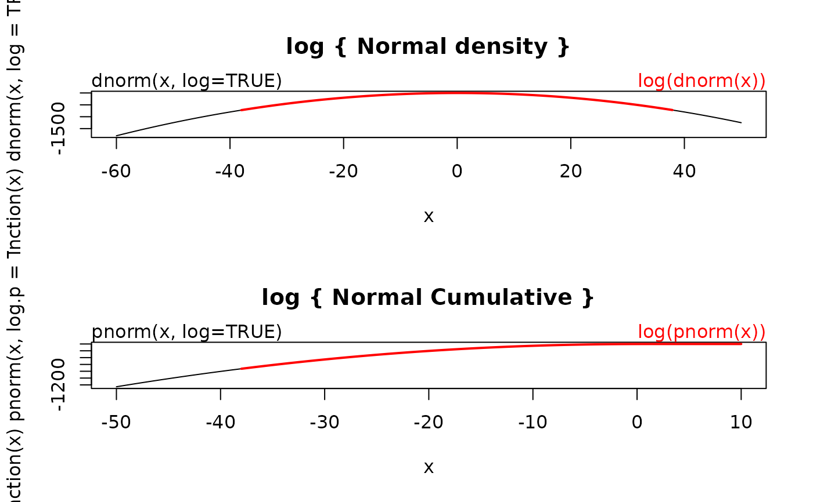

dnorm4.RdDensity, distribution function, quantile function and random
generation for the normal distribution with mean equal to mean
and standard deviation equal to sd.
dnorm4(x, median = 0, kappa = 1, log = FALSE)For pnorm, based on Cody (1993).
For qnorm, the code is based on a C translation of
Wichura (1988)
which provides precise results up to about 16 digits for
log.p=FALSE. For log scale probabilities in the extreme tails,
since R version 4.1.0, extensively since 4.3.0, asymptotic expansions
are used which have been derived and explored in
Mächler (2022).
For rnorm, see RNG for how to select the algorithm and
for references to the supplied methods.
dnorm gives the density,
pnorm is the cumulative distribution function, and
qnorm is the quantile function of the normal distribution.
rnorm generates random deviates.
The length of the result is determined by n for
rnorm, and is the maximum of the lengths of the
numerical arguments for the other functions.
The numerical arguments other than n are recycled to the
length of the result. Only the first elements of the logical
arguments are used.
For sd = 0 this gives the limit as sd decreases to 0, a
point mass at mu.
sd < 0 is an error and returns NaN.
If mean or sd are not specified they assume the default
values of 0 and 1, respectively.
The normal distribution has density $$ f(x) = \frac{1}{\sqrt{2\pi}\sigma} e^{-(x-\mu)^2/2\sigma^2}$$ where \(\mu\) is the mean of the distribution and \(\sigma\) the standard deviation.
Becker RA, Chambers JM, Wilks AR (1988). The New S Language. Chapman and Hall/CRC, London. ISBN 053409192X.
Cody WJ (1993). “Algorithm 715: SPECFUN—A Portable FORTRAN Package of Special Function Routines and Test Drivers.” ACM Transactions on Mathematical Software, 19(1), 22–30. doi:10.1145/151271.151273.
Johnson NL, Kotz S, Balakrishnan N (1994).
Continuous Univariate Distributions, volume 1.
Wiley, New York.
ISBN 978-0-471-58495-7.
Chapter 13.
Mächler M (2022). Asymptotic Tail Formulas for Gaussian Quantiles. Vignette, CRAN package DPQ, https://CRAN.R-project.org/package=DPQ/vignettes/qnorm-asymp.pdf.
Wichura MJ (1988). “Algorithm AS 241: The Percentage Points of the Normal Distribution.” Applied Statistics, 37(3), 477. doi:10.2307/2347330.
Distributions for other standard distributions, including
dlnorm for the log-normal distribution.
require(graphics)
dnorm(0) == 1/sqrt(2*pi)
#> [1] TRUE
dnorm(1) == exp(-1/2)/sqrt(2*pi)
#> [1] TRUE
dnorm(1) == 1/sqrt(2*pi*exp(1))
#> [1] TRUE
## Using "log = TRUE" for an extended range :
par(mfrow = c(2,1))
plot(function(x) dnorm(x, log = TRUE), -60, 50,
main = "log { Normal density }")
curve(log(dnorm(x)), add = TRUE, col = "red", lwd = 2)
mtext("dnorm(x, log=TRUE)", adj = 0)
mtext("log(dnorm(x))", col = "red", adj = 1)
plot(function(x) pnorm(x, log.p = TRUE), -50, 10,
main = "log { Normal Cumulative }")
curve(log(pnorm(x)), add = TRUE, col = "red", lwd = 2)
mtext("pnorm(x, log=TRUE)", adj = 0)
mtext("log(pnorm(x))", col = "red", adj = 1)

## if you want the so-called 'error function'
erf <- function(x) 2 * pnorm(x * sqrt(2)) - 1
## (see Abramowitz and Stegun 29.2.29)
## and the so-called 'complementary error function'
erfc <- function(x) 2 * pnorm(x * sqrt(2), lower = FALSE)
## and the inverses
erfinv <- function (x) qnorm((1 + x)/2)/sqrt(2)
erfcinv <- function (x) qnorm(x/2, lower = FALSE)/sqrt(2)